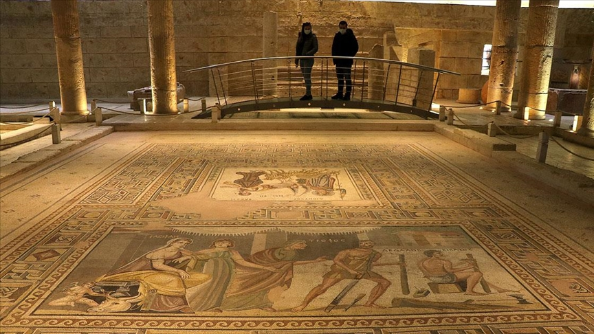
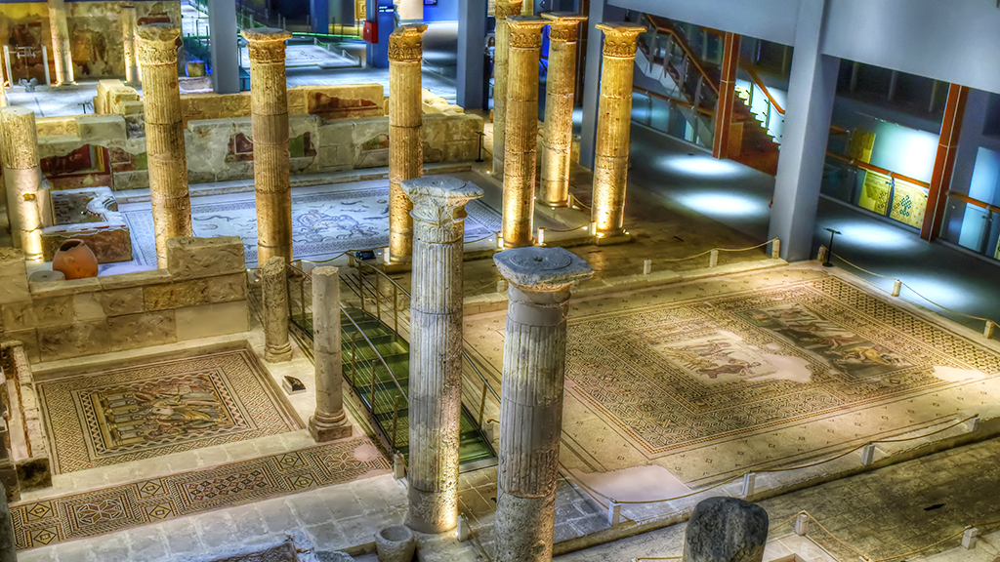

Zeugma Mozaik Müzesi, 9 Eylül 2011 tarihinde Gaziantep'te açılan ve 1700 metrekarelik mozaik ile dünyanın ikinci büyük mozaik müzesi olma özelliğini taşıyan müzedir.
Yaklaşık 3 yıl boyunca "dünyanın en büyük mozaik müzesi" unvanını taşıyan müze, bu unvanını, 28 Aralık 2014 tarihinde açılan Hatay Arkeoloji Müzesi'ne devretmiştir. Müze, ziyarete açık olduğu ilk bir gün boyunca 3000'in üzerinde ziyaretçi ağırlamıştır.
Gerek mimarisi, gerekse teknolojik açıdan dünyanın önde gelen bir müzesidir. İki bin yıllık mozaiklerin yıllar içinde define avcılarının talanıyla eksilen parçaları, lazer sistemiyle görüntü olarak tamamlanmaktadır.
Zeugma’daki mozaikler on üç renk armonisinden oluşmaktadır. Üç blok olarak inşa edilen Zeugma Mozaik Müzesi, mozaik ve arkeoloji müzeleriyle sergi ve konferans salonu olarak hizmet verecek. Müzede Zeugma'dan gelen mozaikler sergilenilir. Ayrıca Dünyaca ünlü "Çingene Kızı" mozaiği burada sergilenmektedir.
Zeugma sanal müzesini ziyaret etmek isteyenler buraya tıklayabilir.